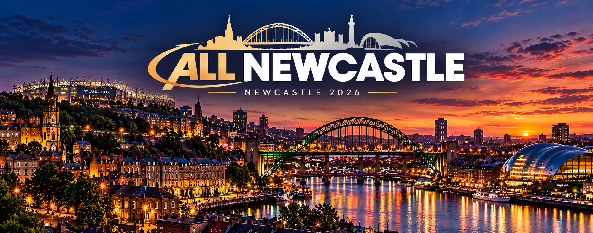

31 OKT – 3 NOV · ⚽ FOTBALL / MAT / FELLESSKAP
⚽ Kampstart mandag 2. november kl. 20.00
Beregner nedtelling …
Alle klokkeslett i programmet er lokale på reisemålet.
💬 Newcastle Chat
Åpne i Messenger ↗
Program
Min liste
Søndagstips
Deltagerliste
Hotell
Kart
Praktisk